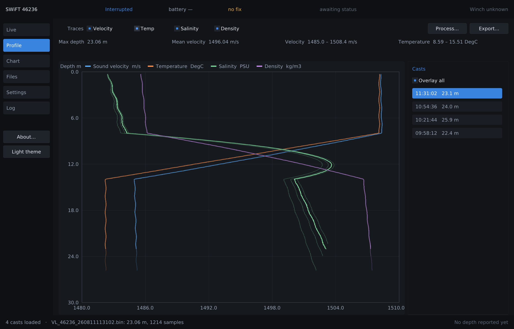
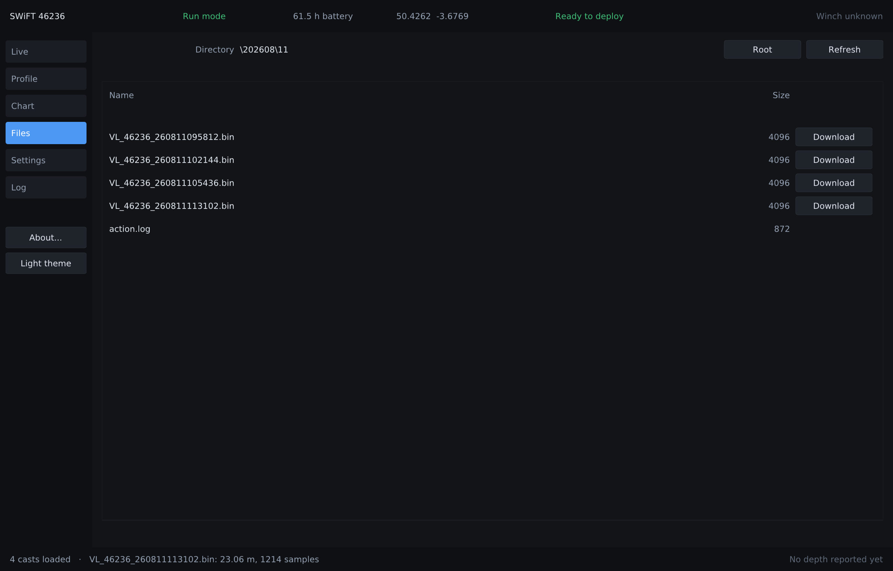
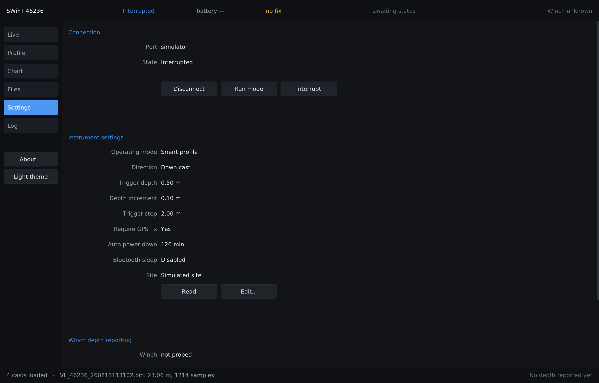
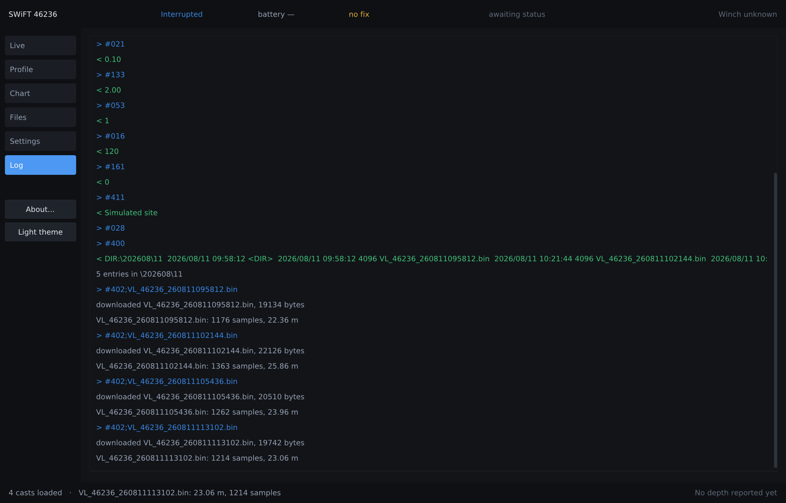
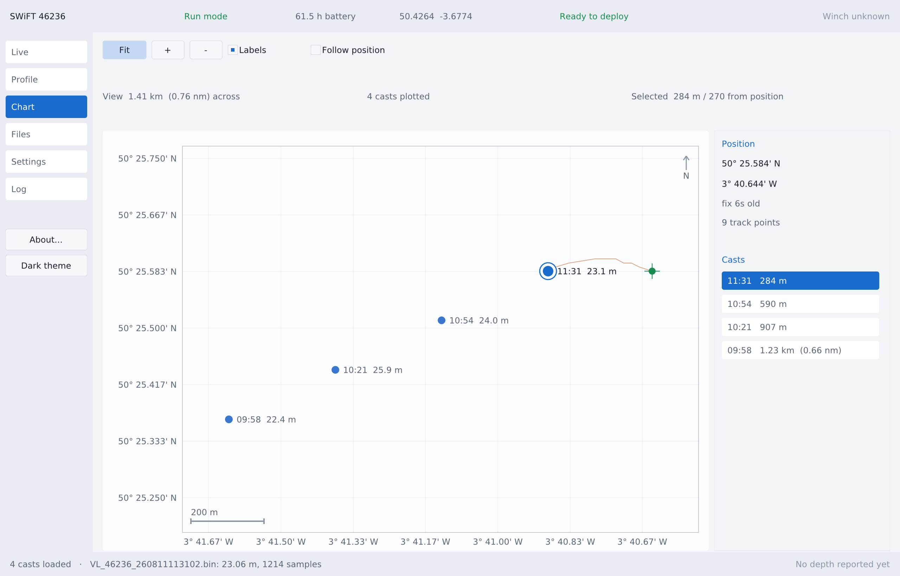
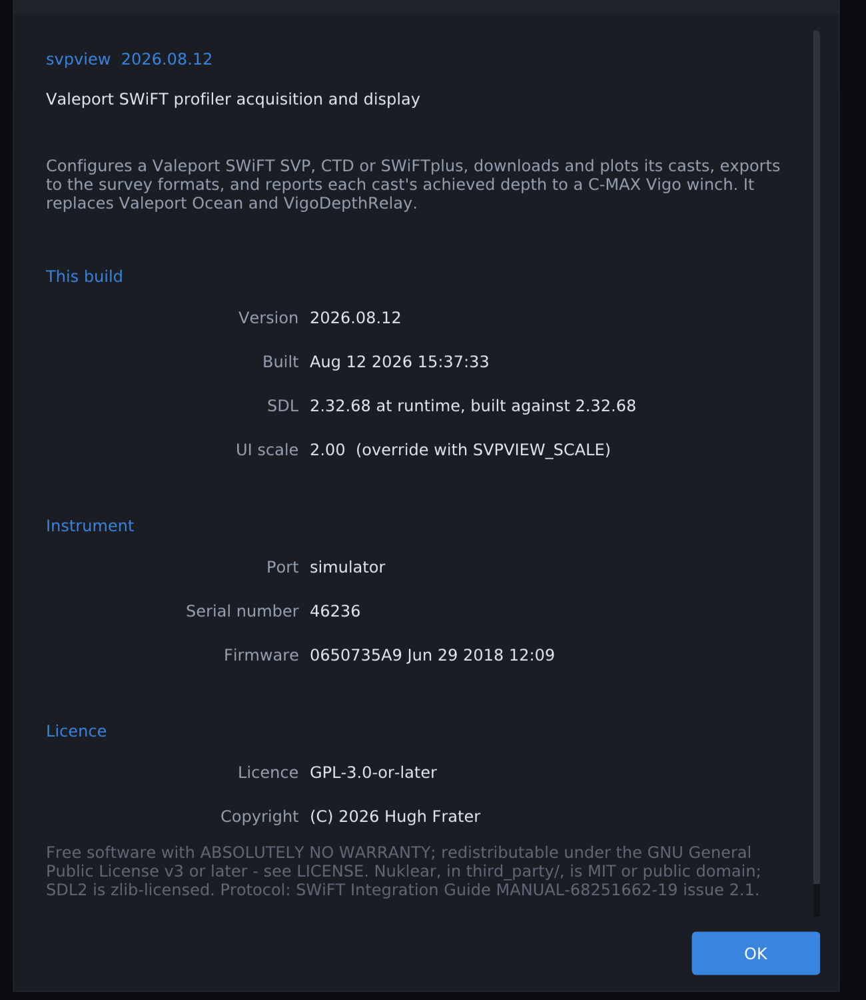
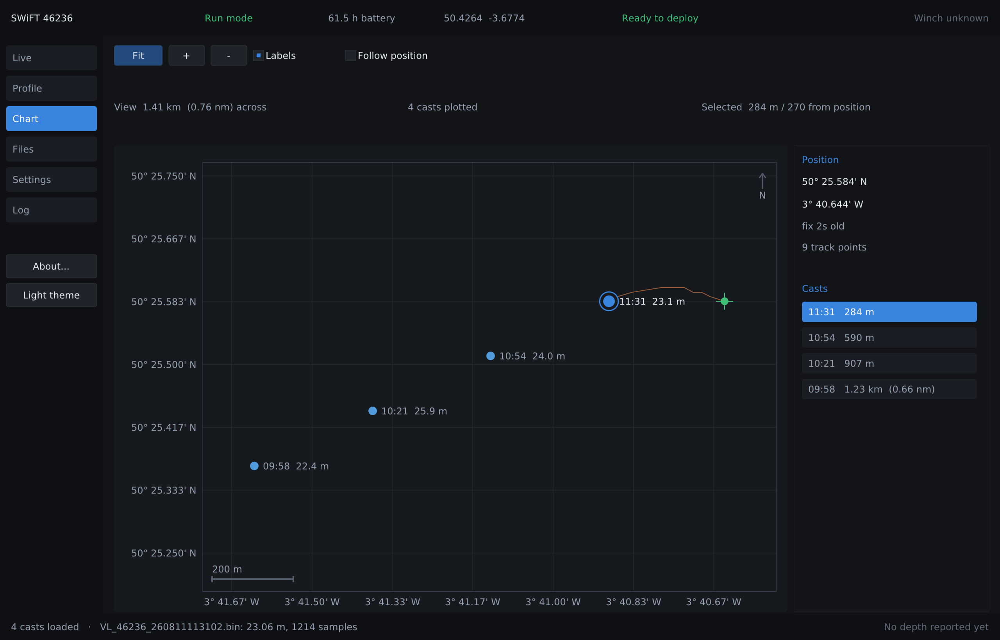
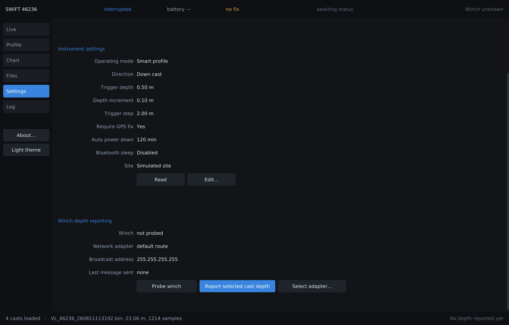
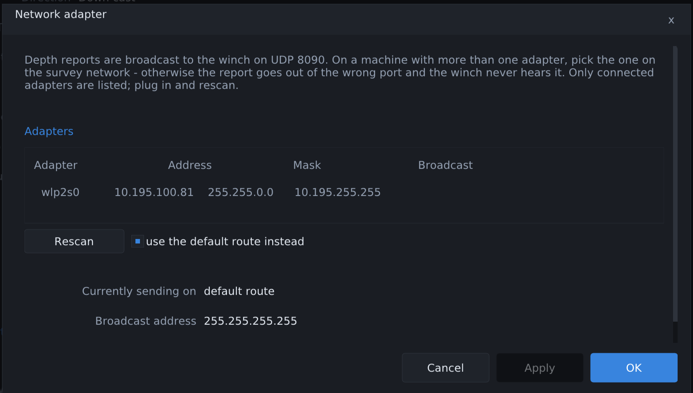

svpview configures a Valeport SWiFT sound‑velocity or CTD profiler, downloads the casts it recorded, derives and plots them, exports to the formats the survey software downstream wants, and reports each cast’s achieved depth to a C‑MAX Vigo winch. It is one statically‑laid‑out binary with no installer, no runtime, and no configuration beyond a settings file it writes itself.
It does not control the winch. Casts are commanded from the winch’s own panel and web UI, which is where the operator already is and where the safety interlocks live. svpview only reports the depth a cast reached, over the profiler UDP protocol Vigo already listens for on port 8090, so it drops into an existing workflow in place of VigoDepthRelay without becoming a second thing that can drive a winch.
docs/VIGO_INTERFACE.md as available and deliberately unused, so the decision is recorded
rather than rediscovered and re‑argued in a year.
There is a single exception, and it comes from the profiler protocol rather than any control API: if the file
transfer fails — typically a Bluetooth link dropping with the instrument hanging at the transfer point
— svpview sends F. Vigo jogs the spool in by 100 mm to shorten the Bluetooth path,
re‑checks its proximity switch and answers BTRST, and the download is retried. Bounded retry
count, then it stops and says so.
Seven rules. They are not aspirations written after the fact — each one has code and test consequences that are pointed out where they appear later in this document.
Every value on screen can be traced to a measurement or is marked as absent. A cast logged without a GPS fix does not get plotted at 0°N 0°E — it is counted in the chart’s panel as “not shown: logged with no GPS fix”. A status sentence whose checksum fails is parsed, flagged and counted, not silently accepted and not silently dropped. A depth the winch will reject is explained before the datagram goes out, in the operator’s terms.
The .bin reader takes its header size from a field inside the file. That field can point past the
end of the file, and a corrupt one did produce a genuine out‑of‑bounds read during development
— found by the test that deliberately corrupts it, under AddressSanitizer. The reader now walks a bounded
cursor that latches on the first overrun and returns zeroes thereafter, so a truncated or garbled file yields a
short cast or a clear refusal, never a crash.
A plot must not cost more to draw because a cast holds more samples than the plot has pixels. Each trace is decimated to the pixel grid as it is drawn, so a 1200‑sample cast costs what a few hundred segments cost and looks identical.
This one arrived the hard way, and it is the best evidence in this document that the rule matters: overlaying four casts with all four traces — roughly 9600 line segments, each of them a quad — crossed Nuklear’s 16‑bit vertex index limit of 65535 and the assertion inside its draw list killed the program. Ticking four checkboxes with four casts open is not an edge case. The ceiling is now 32‑bit (which needed a fix to the vendored SDL backend, where the index size is hard‑coded to two bytes — an upstream bug), and the decimation keeps a frame’s vertex count tied to the size of the plot rather than to the data.
Every link is non‑blocking and polled once per frame. There is no operation that stops the window repainting, which is why there is no need for a progress dialog that lies. See §9.
Pages are built from the same row helpers, so labels and fields share edges across every page. Dialogs all carry Cancel / Apply / OK in that order, right aligned, with the body scrolling under a pinned button row and a title‑bar close; each is measured as it draws and sized to its own content, so a dialog never hides its controls behind a scrollbar and the adapter picker is exactly one row taller when a second adapter appears.
Every metric is written at scale 1 and multiplied by the UI scale as it draws; the font atlas is baked at physical pixel size so text is crisp rather than magnified. The window opens at the design size times that scale, clamped to the desktop’s usable bounds — on a 192 dpi panel that is 2560×1640 instead of a postage stamp.
Where the integration guide is silent or our copy of it is defective, the gap is documented as a gap. The
acknowledged‑extraction command #433 is unimplemented because the protocol figure is blank in
the PDF; it is listed as deferred with the reason, not quietly omitted.
A status strip along the top that is always true, a navigation rail, the page, and an action bar that reports what the program is doing and what the winch last accepted. Six pages.

Instrument and serial, link state, battery hours remaining, last position, the ready‑to‑deploy verdict, and the winch. The deploy verdict is not a flag repeated back: when the instrument says it is not ready, the strip and the Live page explain why in the operator’s terms — no fix, or the trigger depth is not set — rather than showing a code to look up. The minimum window width is set by this strip, because “NOT ready to deploy” truncating mid‑word is the one caption that must never be misread.
Continuous‑mode time series of the primary observable, with the instrument’s identity, the last recorded file name and a running count of checksum failures — a slow rise there is the first sign of a marginal Bluetooth link.
Sound velocity, temperature, salinity and density against depth. Multi‑cast overlay, cursor readout of the nearest sample, axis ranges snapped to round numbers. Tick labels are dropped where they would collide but every gridline is kept — at UI scale 2 on a narrow plot there is not room for all six numbers, and overlapping digits are worse than fewer of them.
Where the casts were taken. §4.

#400/#406; each file has its own Download button, and the download streams to a
temporary file which is parsed and only then kept. Nothing is deleted from the card except on an explicit
operator action.

Dark and light come from one role‑based palette table, so a widget never hard‑codes an RGB value and the two themes cannot drift apart. Same layout, same metrics, one word changed on the button that switches them.

The window title carries the version and, once connected, the instrument and port — so a screenshot identifies the build, and two profilers open at once can be told apart from the taskbar:
svpview 2026.08.12 - SWiFT 46236 on /dev/ttyUSB0
The About box adds the build stamp, SDL at runtime and the version it was compiled against (those differ on a machine with a stale library), the UI scale in force, and the connected instrument: the questions a support call opens with, answerable without asking the operator to run anything.


There is no basemap imagery, and that is a decision rather than an omission. Tiles would mean a tile server, an image decoder, a cache, a licence and an internet connection on a boat that has none. What a positioning plot has to do — show the geometry between the casts, the track and the vessel, to a stated scale — needs none of that. Nothing was added to the dependency list to build this page.
Positions are projected onto a local tangent plane about the view centre, using the WGS84 metres‑per‑degree series at the working latitude. For casts within one survey area — tens of kilometres at most — that is accurate to centimetres, and it is better than a spherical formula on a mean radius, which is out by roughly 0.3%: 3 m in every kilometre. Distance and bearing fall back to the spherical forms once two positions are more than a third of a degree apart, so a stray fix on the other side of the world still gives a sane answer instead of nonsense.
The forward projection and the distance function are checked against each other in the test suite, so the chart cannot draw one separation while the readout states another.
Gridlines land on 30°, 10°, 5°, 2°, 1°, then whole minutes, then whole seconds, then tenths — never on a round number of metres. Labels are degrees and decimal minutes, the form written in a survey log, and carry exactly the resolution the graticule is drawn at and no more. The scale bar is separately a round 1 / 2 / 5 distance, because a scale bar has to be divisible by eye.
| Source | Carries | Resolution | Used for |
|---|---|---|---|
| Cast file header | float32 lat, lon | sub‑metre | cast markers |
$PVBB broadcast | four decimal places | ~11 m of latitude | live marker, track |
This is why the track keeps only fixes more than 15 m from the last one. Below that figure a stationary instrument whose GPS wanders across a quantisation cell reports two positions 11 m apart for ever, and the track would fill with jitter that looks like movement. The threshold is a property of the broadcast, not a guess, and the simulator reproduces the four‑decimal quantisation rather than hiding it.
230 400 8N1 over Bluetooth or USB. # interrupts run mode; the instrument answers with
a > prompt and accepts #NNN commands; #028 returns it to run mode. The
connect sequence is interrupt → identify → read every setting → back
to run mode, so the program never sits at a prompt it forgot to leave, and every step carries a deadline: a
pulled cable leaves the link closed with a reason, not hung.
Each of these is now a regression test.
| Finding | What went wrong, and what it means |
|---|---|
The prompt is a > at the start of a line |
Directory listings contain <DIR>. Treating any > as the prompt
truncated every listing at the first subdirectory. |
| The command echo precedes the file data | On #402 the instrument echoes the command before the payload. Left in, it shifts the header
by a few bytes and every download parses as corrupt. Echo skipped, trailing prompt trimmed. |
| Basic extraction has no terminator | End of file is an idle timeout — 900 ms of silence. Worth knowing before designing a progress indicator around a length that never arrives. |
| The header size counts itself through the ETX | Confirmed rather than assumed: walking the documented fields gives 246 / 295 / 312
bytes for the three firmware variants, matching the totals the guide quotes independently. Asserted in
tests/test_binfile.c. |
The $PVBB checksum is a plain XOR of everything between $ and *. Our
copy of the guide does not reproduce its own worked examples — they are out by a constant 0x70, so
characters were lost in the document. The algorithm is nevertheless confirmed, because the deltas
between successive examples reproduce exactly. A sentence with a failing checksum is therefore parsed, flagged
and counted rather than discarded: on a link where the guide itself is lossy, throwing away data on a checksum
we cannot fully verify against the vendor’s own text would lose real casts.
All of it in sv_ocean.c — portable, no I/O, unit‑tested against published values.
An SVP measures sound speed and salinity is inverted from it; a CTD measures conductivity and sound speed is
computed. Either way all five derived columns end up populated, which is what the export writers and the plot
expect, so nothing downstream needs to know which instrument produced the cast.
| Quantity | Method | Check value |
|---|---|---|
| Depth from pressure | UNESCO 1983, with the gravity term at the cast’s own latitude | 9712.653 m at 10000 dBar, 30°N |
| Sound speed | Chen & Millero | c(35, 0, 0) = 1449.14 m/s |
| Salinity | PSS‑78 | round‑trips with conductivity |
| Density | EOS‑80 | ρ(35, 5, 0) = 1027.67547 kg/m³ |
| Salinity from sound speed | numeric inverse of Chen & Millero | inverts to 1e‑6 |
| Conductivity from salinity | numeric inverse of PSS‑78 | inverts to 1e‑6 |
Applied to the selected cast, each step either fills in derived columns or removes samples — none of them ever grow the array, so the single allocation made by the file reader is the only one a cast ever needs.
CSV, Valeport VP2, Kongsberg .asvp, Caris .svp, Hypack .vel.
Every file is written to a temporary file and renamed into place. A survey machine that loses power mid‑write then has either the old file or the new one — never a half‑written sound velocity profile that the processing software will happily load and quietly misuse.
One UDP socket on port 8090 and three message types. Vigo dispatches on character 0 only, which is why the message shapes below are what they are.
| Msg | Sent | Reply |
|---|---|---|
| Q | at startup and on a timer, to prove the winch is there | VIGO responding |
| V | VP-<NNN>,Valeport-Winch-Go,<depth> | ACK |
| F | download failed — ask for the spool to be jogged in | BTRST |
Vigo silently discards a depth report under five conditions, and all five look identical from outside: “the winch didn’t see it”. No cast performed yet this session; the message is byte‑identical to the previous one; the cast was aborted; the depth is not finite or not positive; or the depth is outside 0.1×–10× the requested cast depth. svpview mirrors all five rules locally and explains the rejection before transmitting, so the failure appears as a sentence on the Log page rather than as a dive table that mysteriously has no entry.
The dedupe rule is why the sequence number increments per cast: two consecutive casts to the same depth would
otherwise produce identical datagrams and the second would be dropped. This was verified end to end against a
stand‑in for Vigo’s listener — the same depth sent again as VP-002 was
acknowledged, where a byte‑identical repeat is not.


The directed broadcast is computed as (ip & mask) | ~mask rather than taken from the
operating system: the Windows path has to compute it anyway, and a wrong broadcast address sends the depth
report to the wrong subnet, where nothing complains and nothing arrives. Verified against a real /28
adapter that appeared mid‑test — 172.20.10.2 / 255.255.255.240 → 172.20.10.15.
Four, and the dependencies only point one way. The core knows nothing about SDL and does no I/O, which is what makes it testable; everything OS‑specific is behind one header.
| Layer | Modules | Knows about |
|---|---|---|
| UI | sv_ui, sv_plot, sv_chart, sv_theme | SDL2, Nuklear, the app |
| App | sv_app, sv_sim | the core and the platform layer |
| Core | sv_ocean, sv_geo, sv_proto, sv_binfile, sv_profile, sv_export, sv_vigo, sv_config | nothing but C and libm |
| Platform | plat_posix, plat_win32 | the OS, behind plat.h |
The architecture note originally sketched one I/O thread per link. That was replaced before it was written, and the reasoning is recorded in the file rather than lost: at 230 400 baud a frame’s worth of serial data is under 400 bytes. A thread would buy nothing measurable and cost a class of race conditions this program cannot afford. Everything is non‑blocking and polled once per frame from one place.
/* the whole concurrency design */ while (!quit) { pump_sdl_events(); sv_app_poll(app); // serial, UDP, simulator — none of them block sv_ui_frame(ui, w, h); render(); }
No locks anywhere in the program. A bug can therefore be reasoned about by reading one path.
plat.h
rebuilt some objects and not others — which does not fail to link, it silently reads the wrong fields.
It surfaced as the winch page showing a subnet mask where the broadcast address should be. Now built with
-MMD -MP and the generated .d files included. Any C project without this has the same
bug waiting.
make test compiles every suite with AddressSanitizer and UndefinedBehaviorSanitizer. A test that
only passes without them has not passed.
| Suite | Checks | Covers |
|---|---|---|
| test_geo | 106 | metres per degree, distance, bearing, projection round‑trip, graticule steps, position formatting |
| test_proto | 85 | command codec, every documented sentence, framing, directory listings, the prompt rule |
| test_profile | 71 | derive, cast split, despike, thinning, binning |
| test_binfile | 68 | three header variants, SV and CTD, ASCII and UTF‑16 site info, corrupt‑length cases |
| test_vigo | 38 | message building, reply classification, the five silent‑drop rules |
| test_ocean | 31 | depth, sound speed, salinity, density and both inverses |
sv_sim.c emulates a SWiFT at the wire: command echo, the > prompt,
$PVBB broadcasts with their real four‑decimal quantisation, and a synthetic 25 m cast
— warm mixed layer, thermocline, cold isothermal layer, sampled at 32 Hz down and back up —
delivered as a real .bin over #402. The session code, the parsers and the download
path are all exercised, not bypassed. The simulated vessel is under way at 4 knots on a gently turning line, so
successive casts land at different positions and the chart has real geometry to draw.
The emulator deliberately does not share arithmetic with the code under test — it computes its own sound speed and its own vessel motion from constants written out locally. Sharing a helper would let a test pass because both sides made the same mistake.
Worth stating, since it is the honest half of the picture. The vertex‑limit abort in §2.3 is not reachable from any unit test: it needs a real Nuklear draw list, a real font atlas and a window of a particular size. It was found by driving the built application through an ordinary sequence — open four casts, tick the trace boxes — and watching it die. 399 green assertions say nothing about that class of defect.
The screenshots in this document are therefore not decoration. Every one was taken by scripting the real binary at the real UI scale, and three defects fell out of doing it: the abort above, a summary row that was never drawn because it landed a few pixels beyond the panel’s clip, and a scroll offset shared between pages — scroll the settings page down, switch to the chart, and the chart’s controls were off the top of a page with no scrollbar to bring them back. All three are invisible to a test suite and obvious in a screenshot.
Everything in this document runs. Most of it has only ever run against the simulator and the unit tests. That distinction is the most important sentence in the document, so it gets a table rather than a footnote.
| Area | State | Meaning |
|---|---|---|
| Protocol parsers, oceanography, geodesy, processing, export | proven | 399 assertions under ASan and UBSan, against published check values and the guide’s own examples |
| Instrument session, download, plotting, chart, UI | simulator | exercised end to end against a wire‑level emulator; no real SWiFT has been connected |
| Winch depth reporting | stand‑in | handshake and dedupe defeat verified against a stand‑in for Vigo’s listener, not the winch |
| Unattended download loop | needs hardware | ROADMAP phase 7 — ten consecutive operator‑commanded casts, with induced failures |
| Windows build | outstanding | plat_win32.c is not written, so make windows does not link yet |
.vpd reading, batch download, auto‑export |
not yet | planned, unimplemented |
#433 acknowledged extraction |
blocked | the protocol figure is blank in our copy of the guide |
# Debian/Ubuntu: apt install libsdl2-dev · Arch: pacman -S sdl2 · macOS: brew install sdl2 make # ./svpview make test # every suite, ASan + UBSan make debug # sanitised build of the application itself make windows # mingw-w64 cross-build (needs plat_win32.c) ./svpview --sim # run against the emulated instrument ./svpview --open cast.bin # load a logged file SVPVIEW_SCALE=1 ./svpview # override the detected HiDPI scale
Nuklear is vendored in third_party/. There is nothing else to fetch, and no network access is
required to build or to run.
| File | Contents |
|---|---|
| ARCHITECTURE.md | layers, threading rationale, crash‑resistance, known unknowns |
| ROADMAP.md | nine phases with what is done and what needs hardware |
| LICENSE | GNU General Public License v3 — the whole program is under it |
| third_party/README.md | what is vendored, its licences, and the one local fix carried against upstream |
| CHANGELOG.md | the source of truth for release notes, including the bugs found during bring‑up |
| docs/SWIFT_PROTOCOL.md | commands, sentences, the binary header variants |
| docs/VIGO_INTERFACE.md | the winch messages, the silent‑drop rules, and the API not used |